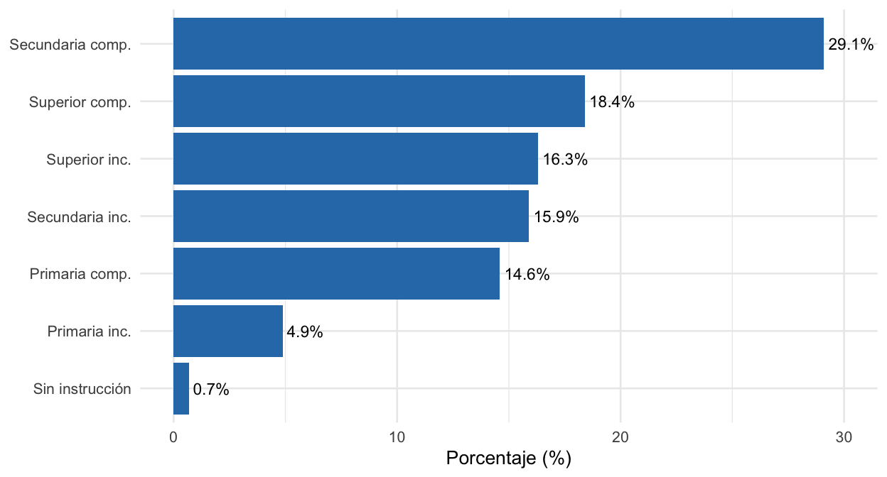
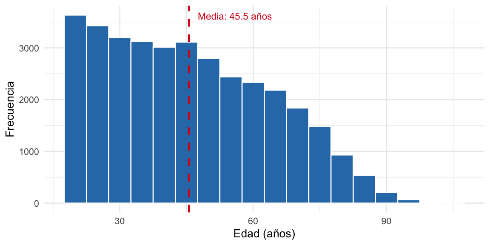
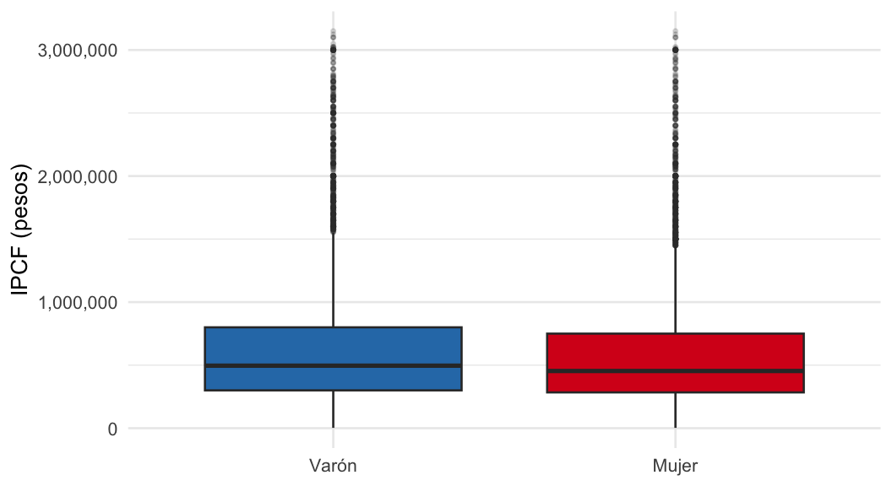

| Sexo | n | Porcentaje (%) |
|---|---|---|
| Varón | 16077 | 46.8 |
| Mujer | 18259 | 53.2 |
Análisis descriptivo de características sociodemográficas y económicas de la población adulta urbana en Argentina
Encuesta Permanente de Hogares – 3er Trimestre 2025
Introducción y problema estadístico
Unidad de análisis y población
La unidad de análisis es la persona de 18 años o más residente en un aglomerado urbano de Argentina. La población objetivo comprende al conjunto de adultos que habitan en los 31 aglomerados urbanos relevados por la Encuesta Permanente de Hogares (EPH) del INDEC durante el tercer trimestre de 2025.
Variables analizadas
Se seleccionaron cuatro variables que permiten caracterizar la situación sociodemográfica y económica de la población adulta urbana:
| Variable | Tipo | Fuente (columna) | Escala |
|---|---|---|---|
| Sexo | Cualitativa nominal | CH04 |
Varón / Mujer |
| Nivel educativo alcanzado | Cualitativa ordinal | NIVEL_ED |
7 categorías ordenadas |
| Edad | Cuantitativa discreta | CH06 |
Años cumplidos |
| Ingreso per cápita familiar (IPCF) | Cuantitativa continua | IPCF |
Pesos corrientes |
El IPCF es el ingreso total del hogar dividido por la cantidad de miembros, e incluye ingresos laborales y no laborales de todos los integrantes.
Parámetros de interés
Para las variables cualitativas se estiman proporciones poblacionales (\(\pi\)). Para las cuantitativas se estiman la media (\(\mu\)), la mediana, la desviación estándar (\(\sigma\)) y los cuartiles (\(Q_1\), \(Q_3\)).
Descripción de la muestra
La EPH es una encuesta probabilística, de diseño bietápico por conglomerados con rotación de paneles. Las unidades primarias de muestreo son los radios censales y las secundarias son las viviendas. El diseño garantiza representatividad estadística de los aglomerados urbanos relevados.
Para los fines de este trabajo se supone aleatoriedad simple en la selección de la muestra, lo que permite aplicar directamente los estimadores clásicos de parámetros poblacionales.
La muestra analizada comprende 34336 personas adultas (18 años o más) con entrevista realizada y nivel educativo informado. Para el análisis de ingresos se trabajó con el subconjunto de 24543 personas con IPCF mayor a cero, excluyendo hogares sin ingreso declarado.
Análisis descriptivo
Sexo
La muestra presenta una leve mayoría de mujeres (53.2%) respecto de varones (46.8%), lo que refleja la estructura demográfica de la población urbana adulta argentina.
Nivel educativo alcanzado
| Nivel educativo | n | Porcentaje (%) |
|---|---|---|
| Sin instrucción | 238 | 0.7 |
| Primaria inc. | 1689 | 4.9 |
| Primaria comp. | 5025 | 14.6 |
| Secundaria inc. | 5469 | 15.9 |
| Secundaria comp. | 9986 | 29.1 |
| Superior inc. | 5609 | 16.3 |
| Superior comp. | 6320 | 18.4 |

La categoría más frecuente es Secundaria completa. Se observa que la proporción de personas sin instrucción es marginal, mientras que los niveles superiores (terciario/universitario) concentran una porción relevante de la población adulta urbana.
Edad
| Media | Mediana | Desv. estándar | Mínimo | Q1 | Q3 | Máximo |
|---|---|---|---|---|---|---|
| 45.5 | 44 | 18.3 | 18 | 30 | 60 | 103 |

La distribución de edades es aproximadamente simétrica con leve asimetría positiva. La media (45.5 años) y la mediana (44 años) son próximas, indicando que no hay valores extremos que distorsionen la media. La desviación estándar de 18.3 años refleja la amplia dispersión esperable en una población adulta.
Ingreso per cápita familiar (IPCF)
| Media | Mediana | Desv. estándar | Q1 | Q3 | Máximo |
|---|---|---|---|---|---|
| 660.271 | 477.000 | 875.465 | 298.657 | 8e+05 | 5e+07 |

La distribución del IPCF presenta marcada asimetría positiva: la media (\(\approx\) $660.000) supera ampliamente a la mediana (\(\approx\) $477.000), lo que indica la presencia de valores extremos hacia la derecha (ingresos muy altos). Esto es habitual en variables de ingreso y sugiere que la mediana es un estimador más representativo de la tendencia central que la media.
Se observa una brecha de ingreso por sexo: la mediana del IPCF de los varones (\(\approx\) $500.000) supera en un 8,7% a la de las mujeres (\(\approx\) $460.000).
Conclusión
Este análisis es de carácter preliminar: los estadísticos obtenidos son estimaciones muestrales de los parámetros de la población adulta urbana argentina, a partir de una muestra de 34.336 personas relevadas por la EPH en el tercer trimestre de 2025.
Los principales hallazgos son:
- La muestra presenta una composición levemente mayoritaria de mujeres (53,2%), coherente con la estructura demográfica urbana.
- La edad promedio de la población adulta se ubica en torno a los 45 años, con una distribución aproximadamente simétrica.
- El ingreso per cápita familiar muestra una distribución fuertemente sesgada hacia la derecha, con mediana de $477.000 y media de $660.000. La disparidad entre ambas medidas revela la influencia de ingresos extremos en la parte alta de la distribución.
- Se observa una brecha de ingreso por sexo del orden del 8,7% en favor de los varones.
Para obtener conclusiones definitivas sobre la población sería necesario realizar inferencia estadística formal (intervalos de confianza, pruebas de hipótesis) y considerar el diseño muestral complejo de la EPH, lo que excede los alcances de este trabajo.